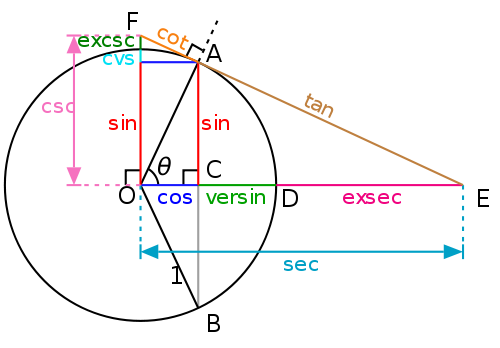

| Choisissez votre langue ! | Choose your language ! |
Montrer que :
\( \displaystyle \lim_{x \to 0 x\neq 0}\frac{sin(x)}{x}=1 \)
aide
En utilisant la figure:
http://upload.wikimedia.org/wikipedia/commons/thumb/9/9d/Circle-trig6.svg/500px-Circle-trig6.svg.png
Montrer que pour 0<x<π/2 on a:
\( \displaystyle sin(x)cos(x)< x< tan(x) \)
solution
http://upload.wikimedia.org/wikipedia/commons/thumb/9/9d/Circle-trig6.svg/500px-Circle-trig6.svg.png
Il est clair que l'aire du secteur angulaire OAD est supérieure à l'aire du triangle OAC et que cette même aire est inférieure à celle du triangle OAE.
Nous arrivons donc à:
cos(x)sin(x)<x<tan(x).
De sorte que notre résultat se ramène à l'évidence géométrique:
limx→0 cos(x)=1
car OC tend à se confondre avec OD quand x (θ sur la figure) tend vers 0.
Show that :
\( \displaystyle \lim_{x \to 0 x\neq 0}\frac{sin(x)}{x}=1 \)
hint
Using this drawing :http://upload.wikimedia.org/wikipedia/commons/thumb/9/9d/Circle-trig6.svg/500px-Circle-trig6.svg.png
Show that for 0<x<π/2 we have :
\( \displaystyle sin(x)cos(x)< x< tan(x) \)
solution
http://upload.wikimedia.org/wikipedia/commons/thumb/9/9d/Circle-trig6.svg/500px-Circle-trig6.svg.png
It is clear that the area of the angular sector OAD is greater than the area of the triangle OAC and that this same area is less than that of the triangle OAE.
So we come to:
cos(x)sin(x)<x<tan(x).
So our result reduces to geometric evidence:
limx→0 cos(x)=1
because OC tends to merge with OD when x (θ in the figure) tends to 0.
|
Création Gilles Dubois - licence CC-BY-SA
Created by Gilles Dubois - licence CC-BY-SA
|
Septembre 2023
September 2023
|
Version mobile Jquery
Mobile Jquery version
|
|